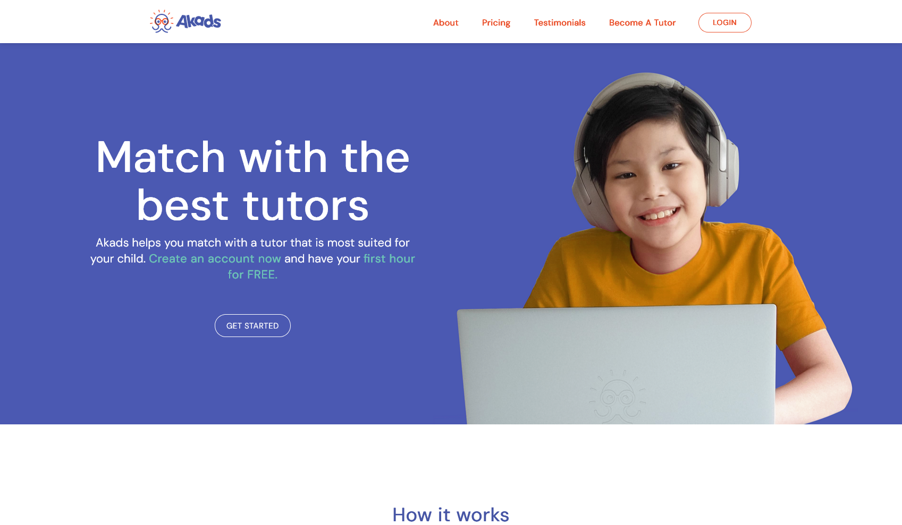
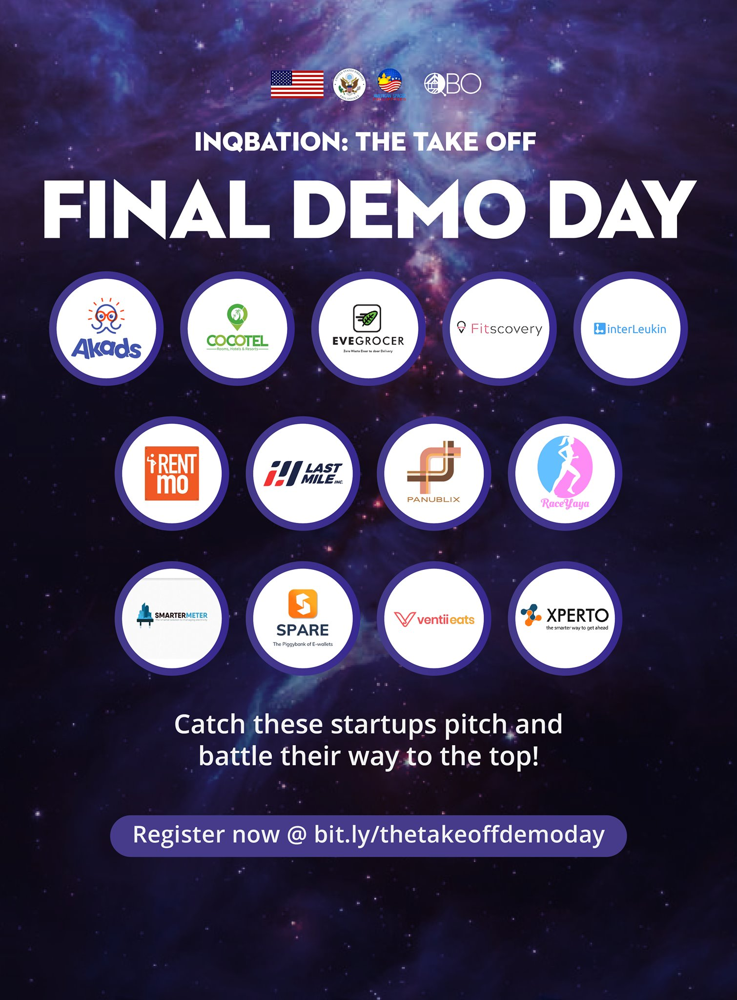
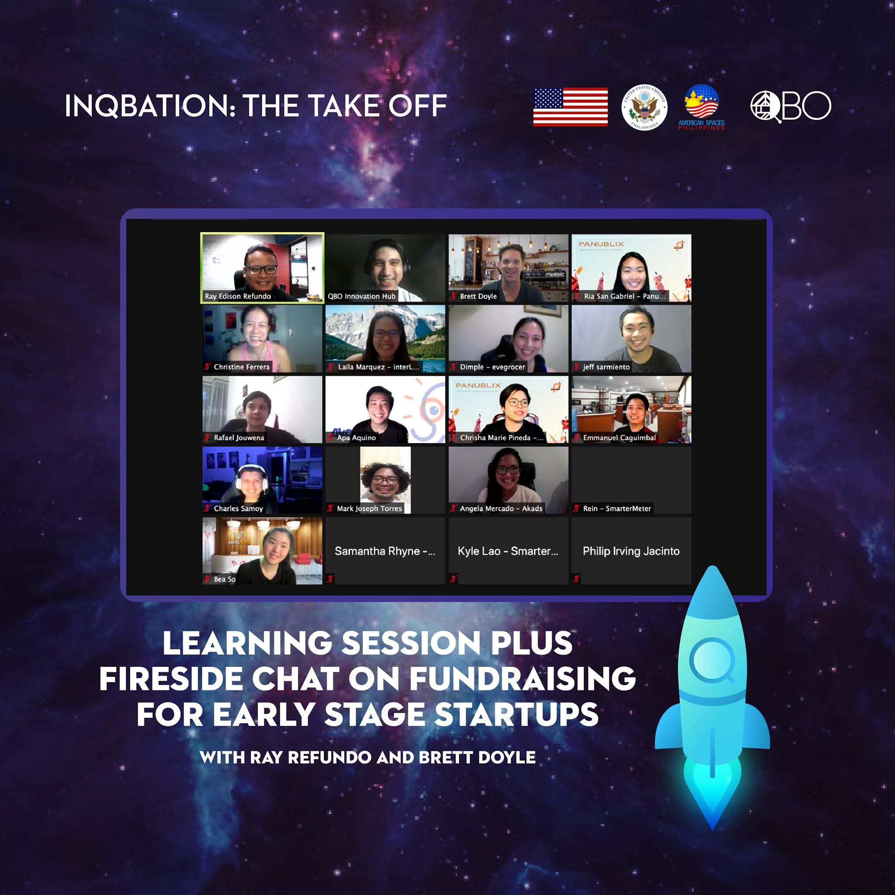

Building a Two-Sided Marketplace from In-Person MVP to Online Platform.

I co-founded Akads PH, a web-based, two-sided marketplace that connects students with vetted tutors for on-demand, one-on-one virtual sessions, complete with an integrated booking and payment system.
The journey began with a personal insight: my mom's difficulty finding a Filipino tutor for my younger brother, coupled with scholar friends actively advertising their skills on Facebook. This anecdotal evidence led my team and me to conduct market research and conclude there was a clear, unserved market need to connect verified, localized tutors directly to students.
As co-founder and CEO, I was responsible for the entire product lifecycle. We conducted initial customer interviews to validate our hypothesis, designing an MVP that prioritized Trust and Safety (vetted tutors, sessions in the student's home).
To validate this, we ran a Manual MVP: bookings were managed via a Facebook Page, and tutors claimed jobs via a private Facebook Group on a first-come, first-served basis. This manual process was vital in modeling the eventual digital workflow and identifying key friction points.
In the middle of operations in 2020, the pandemic halted all in-person tutorials. This crisis required an immediate strategic pivot to an online platform. This was a challenging moment that required rapid redesign and convincing users (especially parents) to trust an online model.
We quickly conducted new user interviews with parents to understand their online concerns. We learned that to overcome the challenge of losing in-person trust, we had to provide clarity and convenience.
This led to two crucial design decisions for our online platform: 1) Low-Friction Onboarding (implemented via the 'Free Trial' first hour), and 2) Convenience (centralizing the booking and payment systems into one seamless digital experience). Following the launch, we gained external validation through the QBO INQBATION pre-seed startup program.


My experience as a founder directly demonstrates core capabilities required for Product Design and UX roles.
I identified a critical market gap, defined the core value proposition for a two-sided marketplace, and successfully navigated a major strategic pivot to maintain business viability.
I initiated and led customer interviews (with both parents and tutors) to validate our hypotheses, demonstrating the ability to translate real user pain points into product features.
I made the tough decisions on what features were critical for the MVP (Trust and Safety, Booking) and what could wait (e.g., in-app video), proving the ability to prioritize and ship efficiently.
I learned to listen to specific user feedback (concerns about online trust) and quickly translate it directly into design solutions like the 'Free Trial' feature.